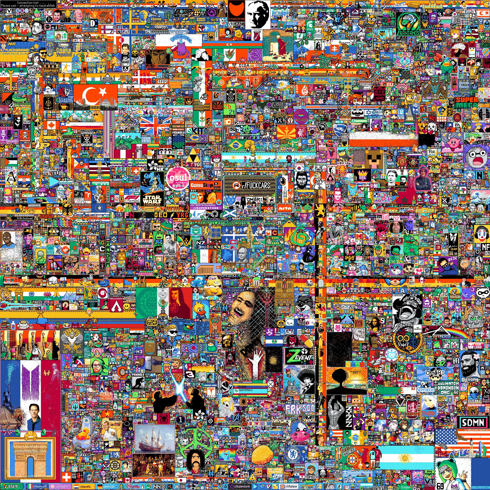

The /r/place Atlas
Hang on...

< Back to the Atlas
You can suggest new entries to the Atlas for art that isn't mapped yet.
Please read this reddit post for instructions.
Click anywhere on the image to start drawing a shape. When you're happy with the result, click the "Finish" button above or press the Enter key.
You can then add more information about your object.